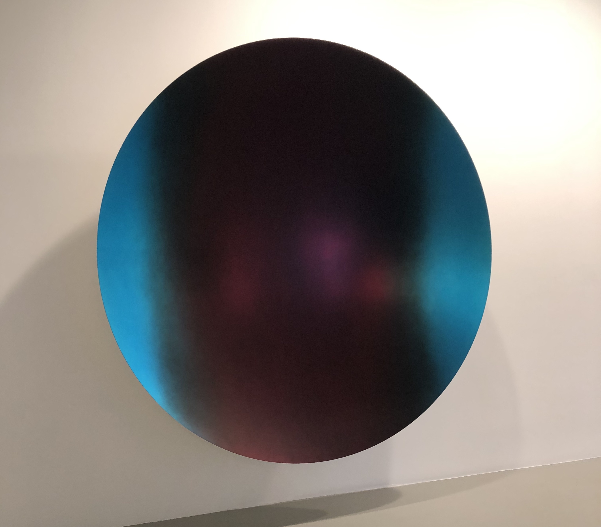

Glisten (Cobalt Blue to Red mix 2), 2018, Aluminum and paint, 87 ⅝ x 87 ⅜ x 18 ⅞ inches.
Anish Kapoor is a British-Indian artist that has been creating large-scale sculptures since the 1980’s. His most well known piece is his mirrored sculpture, The Bean, located in Chicago. This is a great introduction to the types of work and themes he addresses in his work. Kapoor is known for using reflection and large forms to immerse the viewer into a world full of questions. His work asks the viewer to reflect on their own presence in space as well as their perception of it.
Out of the four mounted circles in this exhibition, I was most attracted to the blue-red gradient. The symmetry invites you to stand centered before it and gaze at your distorted reflection. The concave form makes you appear small and the surface is not mirrored like some of the others. There is a textured effect added to create a muted, fuzzy tone which blurs your reflection before it. The tones are beautiful and inviting yet dark enough to feel daunting and dangerous. I believe this piece encourages self-reflection and questions about how we walk this world. This piece made me feel very isolated and alone in a gallery amongst over chattering people. The colors and scale brought me into a secluded world.